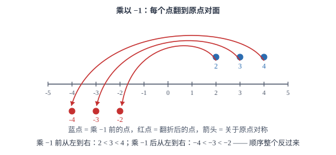
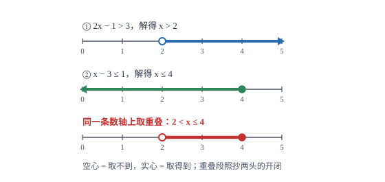

一元一次不等式（组）
不等式与方程只差一条规则：两边乘除负数时，不等号方向必须反转。不等式组的解则是几个范围的公共部分。
| 所属主题 | 方程与不等式 |
|---|---|
| 所属模块 | 代数 |
| 课标学段 | 第四学段（7~9 年级） |
| 前置知识 | 有理数的大小比较、一元一次方程 |
| 核心素养 | 运算能力推理能力 |
教材定位
人民教育出版社《人教版（2024版）义务教育教科书·数学》
七年级下册第11章 不等式与不等式组11.1 不等式11.2 一元一次不等式11.3 一元一次不等式组
对应七下 11.1~11.3。不等式的性质与解集在 11.1，一元一次不等式与不等式组在 11.2、11.3。
说明
用不等号（>、<、≥、≤）连接起来的式子叫不等式。使不等式成立的未知数的所有取值，叫它的解集；解集通常是一个范围，用不等式表示，也可以画在数轴上。只含一个未知数、未知数次数是 1 的不等式叫一元一次不等式，一般形式是 ax+b>0 或 ax+b<0（a≠ 0）。
不等式的性质有三条：两边同时加上（或减去）同一个数或整式，不等号方向不变；两边同时乘（或除以）同一个正数，方向不变；两边同时乘（或除以）同一个负数，方向必须反转。第三条是它与方程最本质的区别，也是所有不等式计算题的失分点。把几个一元一次不等式合在一起，就得到一元一次不等式组，它的解集是各个不等式解集的公共部分。
使用场景
当题目中的条件用「至少」「至多」「不超过」「不低于」「少于」这类词给出时，写出来的不是等式而是不等式。例如「人数不少于 40」写成 x≥ 40，「费用不超过 300 元」写成 25x≤ 300。这类题的关键是先把中文的边界词准确翻译成不等号，再解。
当题目要求某个量在什么范围内取值时，答案要用解集表示。几何里求第三边的取值范围、求使三角形或四边形存在的条件、求使两个量满足大小关系的参数范围，都要借助不等式或不等式组。与方程不同，这里的答案往往是一段区间，答题时要写清端点是否包含。
注意点
两边乘除负数时必须反转不等号。-2x>6 两边除以 -2，得 x<-3，不是 x>-3。可以代一个数验证：取 x=-4，-2×(-4)=8>6 成立，说明 x=-4 应在解集内，而 -4<-3，与反转后的结果一致。
数轴表示要区分端点的实心与空心：含等号（≥、≤）画实心点，不含等号（>、<）画空心圈。另外，不等式组的解集取各解集的公共部分，不是合并所有取值。若两个解集没有公共部分，则不等式组无解。
证明

图 1：乘 -1 把每个点翻到原点对面，2<3<4 变成 -4<-3<-2——顺序颠倒，所以不等号要变号
证明
结论 1不等式两边同加（或同减）同一个数，不等号方向不变。
「加同一个数，方向不变」：数轴上，两个点同时向右平移相同的距离，原来在右边的仍然在右边，左右顺序不会变。3>2，两边同加 5 得 8>7，仍然成立；同减 5 得 -2>-3，也成立。因为加法只是整体平移，不改变相对位置。
关键一步依据是不等式的定义「大于表示在数轴上更靠右」：同加一个数是所有点一起平移，相对位置不变，所以大小关系不变；同减一个数则是向左平移，次序同样不变。这也是解不等式时两边同加减不必变号的原因。
结论 2不等式两边同乘一个正数，不等号方向不变。
「乘正数，方向不变」：乘一个正数相当于把数轴按比例放大（或缩小），所有点到原点的距离按同一比例变化，原点不动，左右顺序同样不变。3>2 两边乘 2 得 6>4，成立。
关键一步依据是「乘正数是关于原点的同向放大」：各点到原点的距离按同一比例变化而左右次序不变；又因原点本身不动、0 不变号，所以与零比较时大小方向也不会改变。
结论 3不等式两边同乘一个负数，不等号方向必须改变。
关键在「乘负数」。乘 -1 相当于把数轴上的每个点关于原点对称翻折：原来在原点右边的点跑到左边，左边跑到右边，左右顺序整个颠倒。3>2，翻折后 -3 与 -2，此时 -3<-2，不等号方向反了。乘任何负数都可以看成「乘它的绝对值（不改变方向）再乘 -1（改变方向）」，所以一次乘负数就必然反转一次。（翻折过程见图 1）
关键一步依据是乘负数等于「乘绝对值再乘 -1」：前一步由绝对值不改变方向，后一步由关于原点对称会颠倒左右次序，所以方向必然反转一次。这是解不等式时最容易漏掉变号的一步。
结论 4不等式组的解集是各个不等式解集的公共部分（交集），不是并集。
由此可知，不等式组的解法与方程组类似但要小心：分别解出每个不等式，再把解集画在同一条数轴上，取公共部分。若把不等式组看成「同时满足多个条件」，公共部分正是「同时落在所有区间里」的那一段，取交集而不是并集。
关键一步依据是不等式组的含义「组中各不等式必须同时成立」：同时满足全部条件的数才在解集内，所以要把每个解集都覆盖到的部分取出来；在同一条数轴上表示出来就是公共的那一段。
动手实验
在数轴上做翻折实验：把 2、3、4 三个点画出来，标注 2<3<4；再以原点为中心翻折（相当于乘 -1），三个点落到 -2、-3、-4，此时从左到右的顺序是 -4<-3<-2，与原来完全相反。再取一个正数乘一次（如乘 2），三个点变成 4、6、8，顺序仍是 4<6<8，没有改变。两次实验结果正好对应不等式性质的第二、第三条。
解题思路
解一元一次不等式走五步，与解方程完全相同：去分母、去括号、移项、合并同类项、系数化为 1。唯一的差别在最后一步：若两边除以（或乘）的是负数，不等号要反转。为了减少失误，可以在系数化为 1 之前先看清系数的正负，并在草稿上写一句「除以负数，变号」，把动作显式化。
解不等式组走三步：分别解出每个不等式，得到各自的解集；把每个解集画在同一条数轴上（注意空心与实心）；读出所有区间重叠的那一段，写成不等式。若没有重叠部分，写「无解」。数轴是最可靠的工具，不要凭想象取交集。
四类常见结果可以记成口诀，但要在数轴上验证过再用：同大取大（x>2 且 x>5 得 x>5）；同小取小（x<2 且 x<5 得 x<2）；大小小大中间找（x>2 且 x<5 得 2<x<5）；大大小小无处找（x>5 且 x<2 无解）。口诀只是数轴读法的速记，遇到含等号的边界要格外小心。
按场景的例题
例 1（场景：生活优化） 班费购买图书的数量上限
某班用不超过 300 元的班费购买单价 24 元的图书，最多可以买多少本？
解：设购买 x 本，由「不超过 300 元」得 24x≤ 300。两边除以 24（正数，不变号）：x≤ 12.5。因为书的本数必须是整数，所以 x 最大取 12。检验：12 本需 288 元，不超过 300；13 本需 312 元，超过 300，不符合。
答：最多可以买 12 本。
例 2（场景：图形设计） 用数轴表示不等式组的解集
解不等式组 \begincases2x-1>3\\ x-3≤ 1\endcases，并把解集在数轴上表示出来。
解：第一个不等式：2x-1>3，移项得 2x>4，两边除以 2 得 x>2。第二个不等式：x-3≤ 1，移项得 x≤ 4。两个解集在同一条数轴上，x>2 是 2 右侧（2 处空心），x≤ 4 是 4 左侧（4 处实心），重叠部分是 2 与 4 之间、不含 2 而含 4（数轴表示见图 2）。
答：解集是 2<x≤ 4。

图 2：两条解集画到同一条数轴上，重叠的一段 2<x≤ 4 才是不等式组的解（空心取不到、实心取得到）
例 3（场景：测量与工程） 三角形第三边的取值范围
一个三角形的两边长分别是 5 和 8，第三边长是 x。求 x 的取值范围。
解：由三角形三边关系「任意两边之和大于第三边」，得三个不等式：x+5>8、x+8>5、5+8>x。第一个给出 x>3，第二个给出 x>-3（被 x>3 覆盖），第三个给出 x<13。三者取公共部分，得 3<x<13。检验边界：x=3 时三边为 3、5、8，3+5=8，三点共线，不能构成三角形，所以 3 不能取；x=13 时 5+8=13，同理不能取。
答：3<x<13。
常用推论
由 a>b 可得 a+c>b+c；由 a>b 且 c>d 可得 a+c>b+d（同向不等式可以相加，这一步不需要任何符号条件）。但同向不等式不能相减：a>b、c>d 时，a-c 与 b-d 谁大取决于两处「差」的相对大小，光凭这两个条件定不下来。相乘则要看符号——只有 a>b>0 且 c>d>0 时才能得出 ac>bd；只要其中有负数，结论就可能反过来。
不等式组 \begincasesx>a\\ x<b\endcases 有解的条件是 a<b，解集为 a<x<b；若 a≥ b，则无解。这条可以用来判断含参不等式组「有解」「无解」时参数的取值范围，是含参题的常用工具。
解集中端点的取舍由原不等式的不等号决定，与解的过程无关。例如 2x≤ 6 得 x≤ 3，端点 3 含在内；而 2x<6 得 x<3，端点 3 不含。答题时若写错端点，整道题的答案就错了，写完要回头核对一次不等号。
易错点
错解 -2x>6 时，两边除以 -2 得 x>-3。
为什么错两边除以负数时没有反转不等号。乘除负数是唯一会改变方向的运算，这一步必须变号。
正确x<-3。验证：取 x=-4，-2×(-4)=8>6 成立，而 -4<-3，说明解集应为 x<-3。
错解不等式组 \begincasesx>2\\ x>5\endcases 时，写成 2<x<5。
为什么错把两个解集当成了「夹在中间」，实际是取公共部分。同时大于 2 和大于 5 的数，只需要大于 5。
正确x>5。在数轴上画一画就清楚：两条都向右的射线，重叠的是从 5 开始的那一段。
错在数轴上表示 x≥ 2 时，在 2 处画了空心圈。
为什么错含等号的解集包含端点本身，必须画实心点；空心圈表示端点不在解集内。
正确x≥ 2 在 2 处画实心点、向右画箭头；x>2 才画空心圈。这个区别在数轴与区间表示里都要一致。
直观理解
把不等式想成「站在数轴的哪一侧」。x>2 表示站在 2 的右边，x<5 表示站在 5 的左边；两个条件同时成立，就是站在 2 与 5 之间。而乘负数相当于整个人转身，原来朝右看的现在朝左看——方向必须跟着反过来，否则就站错了边。不等式组则是同时满足几个「站位要求」，重叠的那一段才是能站的地方。